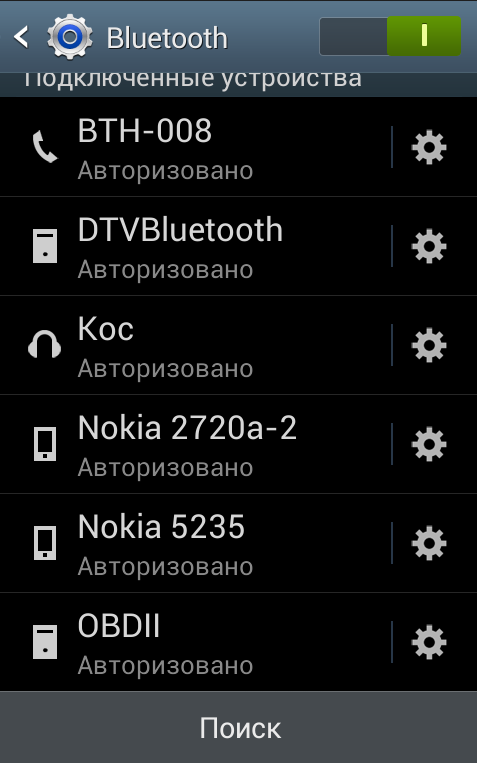
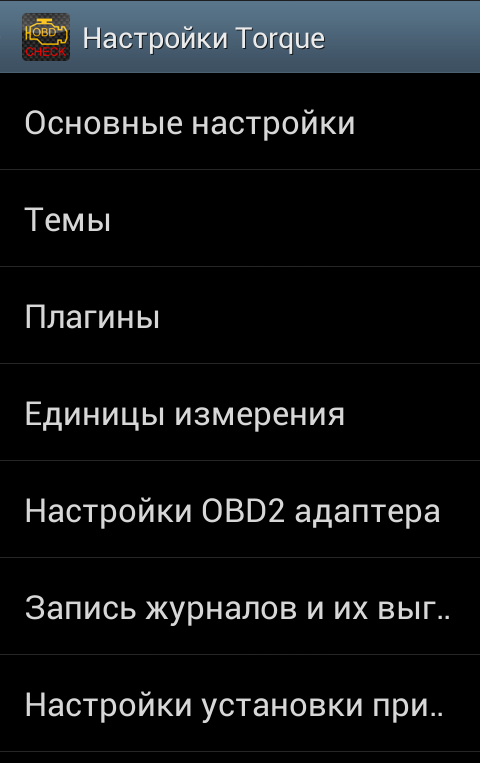
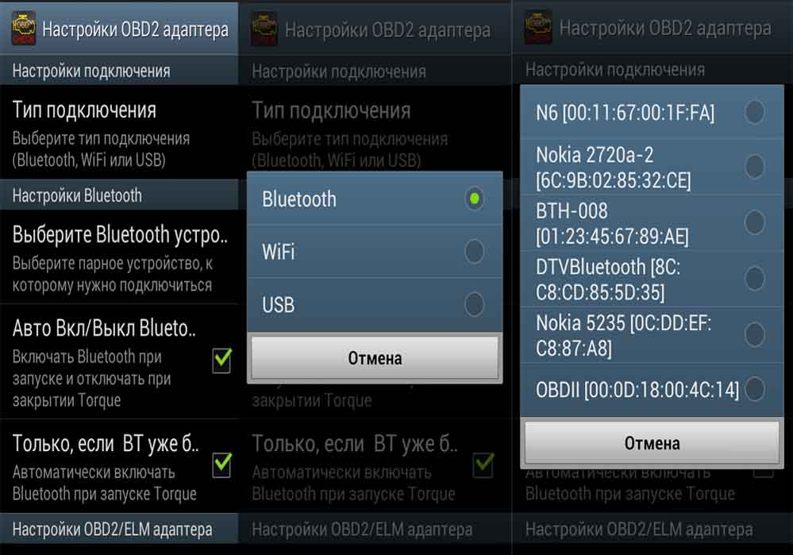

Инструкция по настройке диагностического адаптера ELM 327
Внимание!
При установлении прибора на модели ВАЗ и иные ТС отечественного производства до 2006 года выпуска, то без переходника не обойтись.
Сканер не поддерживает два протокола связи, которые снабжались автомобили Российского и Европейского производства до 2006 года выпуска. Эти протоколы поддерживают, к примеру, авто марки Ford и Mazda, которые выпущены до 2006 года.
Но корректно работает с новым программным обеспечением. Если транспортное средство поддерживает шину CAN, то можете пользоваться диагностическим прибором с любой прошивкой чипа.
Итак, приступим, если у Вас имеется диагностический адаптер ELM327 Bluetooth то для его работы с программой Torque Вам необходимо:
1. Подключить диагностический адаптер ELM 327 Bluetooth к диагностическому разъему OBD II Вашего авто после чего необходимо включить зажигание.
2. Затем включите модуль Bluetooth на Вашем устройстве (смартфон или планшетный ПК на платформе Android).
3. В настройках Вашего мобильного устройства Вам необходимо зайти в раздел беспроводных сетей Bluetooth и нажать поиск нового оборудования для сопряжения. В окне поиска появится новое устройство (как правило идентификатор "CHX", "OBDII", "CBT", "Vgate" и т.п.) После этого Вы можете нажать на пункт сопряжения с устройством (потребуется ввести пароль из инструкции к адаптеру, как правило это 1234,0000,1111,9999,6789).
4. После этого откройте программу Torque.
5. Перейдите в меню программы пункт «настройки».
6. Откройте раздел "OBD2 настройки адаптера / Выберите устройство Bluetooth" и выберите Ваш адаптер ELM 327 Bluetooth (имеет идентификатор "CHX", "OBDII", "CBT", "Vgate" и т.п.) из списка.
7. После этого нажмите на иконку с надписью "Adapter Status" и проверьте подключение (должны появится зеленые галочки у первых 3-х пунктов в списке).
8. Так же выбрать протокол вручную можно в пункте "Профили автомобиля" (находится в том же меню, где и "настройки").
9. После этого Вы можете начинать диагностировать Ваш автомобиль!